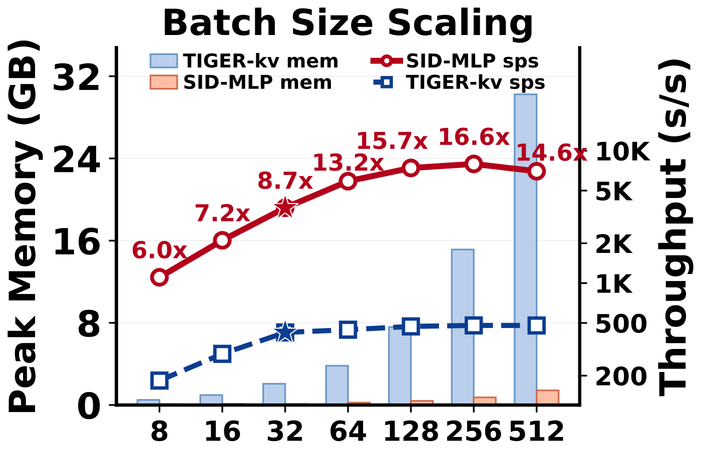

Contents · 9 sections
1What problem is it solving?2The big picture: uncertainty concentrates in the first position3Mechanism: one attention, four MLPs4Main experiment: equal quality, nearly 9 times the throughput5Ablation: which parts cannot be dropped6What happens with a 7B LLM as teacher7Limitations as I see them8How a recommendation team could try it9Bottom line and assessmentSHARE
This is worth reading for teams doing generative recommendation who are struggling with beam-search decoding latency. Generative recommendation represents each item as a Semantic ID (SID) made of a few discrete codes; at inference it generates position by position, running the Transformer decoder at every position, and wider beams make it slower. The core idea in one sentence: almost all of an SID's uncertainty sits in the first one or two positions, and later positions have only one or two valid choices left, so attention need not run at every step. Read out the user history with attention once at the start, then predict each position with its own small MLP whose input is "user context + the prefix generated so far", trained by distillation from the original Transformer. On 3 Amazon datasets, its NDCG@10 matches or slightly beats the teacher model TIGER, throughput is 8.74 times higher, and peak GPU memory falls 95.7%. I think the observation and the method are both clean, but the teacher in the experiments has only 4.59 million parameters and each catalog only about 25,000 items. With the 7B LC-Rec as teacher, it recovers only 83% to 98% of the teacher's quality, so the gain at industrial scale needs your own verification.
What problem is it solving?
Start with an illustrative scenario. A short-video platform uses generative recommendation for retrieval: each item's SID has 4 codes, each chosen from 256; to produce the top 10 candidates for a user, the beam width is set to 50. At each position the 4-layer Transformer decoder runs once for each of the 50 beams, so 4 positions mean 4×50×4=800 decoder-layer evaluations, each also doing cross-attention over the user history. A conventional two-tower or sequential model gives the top K results in one forward pass.
Common ways to speed up LLM inference do not carry over well:
| Approach | Problem in generative recommendation |
|---|---|
| Speculative decoding (a small model drafts, the large one verifies) | Dozens of candidate sequences must be verified and ranked together; when the teacher is already small, the drafting cost cannot be amortized |
| Multi-token parallel or non-autoregressive decoding | Usually needs joint fine-tuning of the teacher or depends on a specific way of building SIDs |
| Distilling into a smaller Transformer | The model shrinks, but the position-by-position computation stays the same |
The authors notice a key difference between generative recommendation and LLM generation: the output is short, fixed-length, and the set of valid code combinations is very limited.
The big picture: uncertainty concentrates in the first position
The authors count how many valid choices the next position has on average, given a valid prefix. On the Instruments dataset (about 25,000 items), the average branching over the 4 positions is 256, about 38, 2.2, and about 1.2, and the other two datasets are nearly identical. In other words, the first position is a real choice among 256; once the first two are fixed, the rest is essentially determined.
The authors test "the decoder is too heavy" with two sets of experiments:
| Experiment (Instruments) | NDCG@10 | Relative to teacher or baseline |
|---|---|---|
| TIGER teacher (4-layer decoder) | 0.0323 | — |
| Teacher generates the first 3 positions, a 1-layer student predicts only the 4th | 0.0323 | Equal |
| A 1-layer student predicts all 4 positions | 0.0318 | -1.5% |
| 1-layer student without prefix self-attention | 0.0310 | -5.4% vs the 1-layer student |
| 1-layer student without cross-attention over user history | 0.0131 | -60.0% vs the 1-layer student |
This shows two things: most of the decoder's depth is redundant, and 1 layer is nearly enough; but the two kinds of information, "the user history" and "the prefix generated so far", cannot be dropped, especially the former. So the goal is clear: keep both kinds of information while removing the attention computation repeated at every step.
![Figure 2 of the paper: the architecture. On the left is Sid-Mlp: the frozen TIGER encoder outputs hidden states H for the user history, and one multi-head attention (MH Attn) produces a context vector z; then MLP1 sees only z to predict position 1, MLP2 sees z and the embedding e1 of position 1, MLP3 sees z, e1, e2, and MLP4 sees z, e1, e2, e3, and each MLP's output is aligned with the teacher decoder's output by KL plus cross-entropy. On the right is Sid-Mlp++: position-specialized MLPs F1 to F4 replace the encoder and are first fitted to the teacher encoder's hidden states Ĥ by mean squared error.](../../../figs/2026-07-31/generative/2605.12617/fig1_arch.png)
Mechanism: one attention, four MLPs
Step one: read out the user history with attention only once. The frozen TIGER encoder encodes the user history into a sequence of hidden states. Sid-Mlp first averages them and projects the average into a query vector, uses it for one multi-head attention over the whole sequence, then applies a feed-forward layer to get the context vector z. z is computed once and reused by every position and every beam. The original decoder does cross-attention over the user history at every position, every beam, and every layer; this cost falls from "positions × beam width × layers" times to once.
Step two: a dedicated MLP for each position. To predict position t, concatenate z with the embeddings of the t−1 positions already generated and feed them to the t-th MLP (one hidden layer), which outputs scores for 256 codes. The embeddings come straight from the teacher and are not trained. A hand walk-through with the scenario above: position 1's input is just z; position 2's input is [z; e(position 1)]; position 3's is [z; e(position 1); e(position 2)]; position 4 adds one more. For the 50 beams, each position is just one batched matrix multiplication, with no KV cache to maintain and no recurrent state to copy and move.
Why a different MLP for each position? Because each position's code distribution is completely different. The ablation shows that sharing one MLP across the 4 positions loses 6% to 10% NDCG@10. Why concatenate the prefix rather than sum it? Summing loses the order and costs 2% to 3%.
Step three: distill from the teacher. During training the TIGER encoder is frozen, and only the single attention readout and the 4 MLPs are trained. Each position's loss is a weighted sum of two terms: the KL divergence (with temperature) from the teacher's output distribution at that position, and the cross-entropy with the true code. Training uses the true SID as prefix (teacher forcing), so the 4 positions can be computed in parallel. Inference uses constrained beam search: a valid-prefix table is built from the fixed item-to-SID mapping, and nonexistent prefixes are pruned directly. Hoot says

Training: teacher forcing
- position 1
- z → MLP₁
- position 2
- [z; e(true₁)] → MLP₂
- positions 3, 4
- same, with true codes
- across the 4
- no waiting, one parallel pass
Each position's loss = KL to the teacher's distribution + cross-entropy to the true code.
Inference: constrained beam search
- position 1
- z → MLP₁ → 256 scores, keep 50
- position 2
- each of 50 appends its own code₁ → 50 × 256 = 12800 candidates
- pruning
- look up the valid-prefix table, drop prefixes no item has, keep 50
- positions 3, 4
- must wait for the previous one, repeat
Prefixes may drift from the truth: a beam whose first code is wrong but still valid hands MLP₂ a prefix that is not this sample's true one, while in training it only saw true prefixes.
The position-by-position flow in column 2 is an illustration of the text; 256 codes per position and 50 beams come from the text. The footnote on prefixes drifting from the truth is our note; the paper does not discuss it.
Source
paper, Sid-Mlp: one attention readout z; MLP t takes [z; e(first t−1 codes)]; training with teacher forcing + KL distillation + cross-entropy; inference by constrained beam search over a valid-prefix tableSid-Mlp++ goes further and replaces the encoder too. At each layer it averages all token states into a global vector, concatenates each token's state with this global vector, and passes it to whichever of the 4 MLPs matches that token's code position for a residual update. Training this encoder directly by distilling output distributions is unstable, so it is done in two steps: first fit the teacher encoder's hidden states by mean squared error, then freeze it and train the Sid-Mlp on top.
Main experiment: equal quality, nearly 9 times the throughput
The datasets are three categories of Amazon Reviews 2023, each with about 25,000 items. The teacher is TIGER (4-layer T5, 4.59 million parameters). Throughput is end-to-end samples per second at batch size 32 and beam width 50. Speedup is relative to TIGER with KV cache, because that is the teacher's reasonable deployment configuration and harder to beat than the version without cache (0.75×). Sid-Mlp's metrics are averages over 3 random seeds.
| Method | Throughput (samples/s) | Speedup | Instruments N@10 | Scientific N@10 | Games N@10 |
|---|---|---|---|---|---|
| TIGER (with KV cache) | 424 | 1.00× | 0.0323 | 0.0243 | 0.0512 |
| Mamba2 decoder | 517 | 1.22× | 0.0326 | 0.0247 | 0.0496 |
| AtSpeed-S (speculative decoding) | 286 | 0.68× | 0.0323 | 0.0243 | 0.0512 |
| EARN (compressed encoder states) | 822 | 1.94× | 0.0319 | 0.0239 | 0.0486 |
| NEZHA (self-drafting) | 3,082 | 7.27× | 0.0308 | 0.0212 | 0.0467 |
| Sid-Mlp | 3,706 | 8.74× | 0.0332 | 0.0250 | 0.0512 |
| Sid-Mlp++ | 4,347 | 10.25× | 0.0327 | 0.0244 | 0.0486 |
This shows the speedup comes mainly from removing repeated decoder computation, not from a smaller model. Several comparisons are convincing. Speculative decoding is actually slower, because the teacher has only 4.59 million parameters and decodes only 4 steps, so drafting and verification costs cannot be amortized. Linear-complexity sequence models like Mamba2 are only 1.2 times faster, because every step must update, copy, and gather recurrent state for each beam, and moving state dominates. NEZHA (a speedup method where the model drafts the later codes itself) is over 7 times faster but loses about 13% NDCG@10 on Scientific. Sid-Mlp is no worse than the teacher on all three datasets and slightly better on Instruments. As I read it, this relates to the smoothing effect of the teacher's soft labels in the sparse space of valid SIDs, and the authors' ablation supports this: dropping the KL term and training only on true codes loses 2.7% to 6.6%.

The figure shows that the main table's 8.74 times is measured at batch size 32, and the gap widens with larger batches, because after the context readout Sid-Mlp is left with only batched matrix multiplications. As beam width grows from 10 to 50, TIGER's throughput drops 37% while Sid-Mlp's barely changes. With teachers whose SIDs are built by three different methods such as RQ-KMeans and RQ-VAE, Sid-Mlp recovers 99.6% to 102.9% of the teacher's NDCG@10.
Ablation: which parts cannot be dropped
| Variant | Instruments N@10 change | Scientific | Games |
|---|---|---|---|
| No prefix input; all 4 positions predicted in parallel from z alone | -72.0% | -65.5% | -64.3% |
| One MLP shared across 4 positions (prefix summed) | -9.3% | -10.0% | -6.1% |
| No multi-head attention; mean then linear projection instead | -4.8% | -6.4% | -3.1% |
| Redo the attention readout at every position | -0.4% | -0.3% | +0.7% |
| No KL distillation; train only on true codes | -2.7% | -4.0% | -6.6% |
This table shows the prefix matters most: without it, the model degrades to "guessing 4 unrelated codes" and loses 60% to 70%. Next is the single multi-head attention; replacing it with a simple average loses 3% to 6%. Redoing attention at every position gives almost nothing, which confirms the authors' starting point: attention needs to happen only once.
What happens with a 7B LLM as teacher
To answer the "teacher too small" concern, the authors attach the same structure to LC-Rec in the appendix. LC-Rec is a generative recommender built on LLaMA-2 7B with 32 layers. The adaptation takes the keys and values of the user-history tokens from layer 8 of the frozen model, and the hidden state of the prompt's last token from the last layer as the query. Learnable linear layers project 4096 dimensions down to 768, and the MLPs, constrained beam search, and loss stay the same. Why layer 8? The authors cite an existing observation that deeper LLM layers attend sparsely and redundantly to history tokens, while earlier layers keep the history information more complete.
| Metric | Sid-Mlp on LC-Rec | NEZHA on LC-Rec |
|---|---|---|
| Trainable parameters | 44.1 million (0.6% of the teacher) | 6.8 billion |
| Share of teacher quality recovered | 83.3% to 97.5% | 65.0% to 82.7% |
| End-to-end throughput speedup | 17.9 times | — |
This shows that with a large teacher, the structure still costs far less and keeps far more than similar methods, but it is no longer "lossless". End-to-end throughput is only 38 samples per second, because the 7B model's prefill (running the whole prompt through once) still has to run; the decode stage alone is 1,262.8 times faster, which means the bottleneck has moved entirely to the encoding side.
Limitations as I see them
First, the scale is too small. The teacher has only 4.59 million parameters and each dataset about 25,000 items, so positions 3 and 4 have almost one choice left. Industrial catalogs often have tens of millions of items, later positions will branch much more, and the premise that "only the first position is hard" must be re-measured. The 7B-teacher result in the previous section already shows that once the teacher becomes a large model, it is no longer lossless.
Second, Sid-Mlp++ is not worth it. It is only about 17% faster than Sid-Mlp (10.25 times versus 8.74 times), but on Games NDCG@10 drops from 0.0512 to 0.0486, about 5%. This shows the encoder is where user-history information lives, and replacing it costs much more than replacing the decoder, so in most settings keeping the teacher encoder is safer.
Third, the evaluation is offline GPU throughput. The main table's speedup is measured at batch size 32, and another batch size would give a different number anywhere between 6 and 16.6 times. Online latency also depends on whether requests can be batched and on the encoder's share of total time, all of which must be measured on your own service.
How a recommendation team could try it
- First measure the average branching of each SID position on your own catalog. If later positions still have dozens of choices, the method's premise does not hold and the gain will shrink.
- Freeze the encoder of your existing generative model, add one multi-head attention readout and one single-hidden-layer MLP per position as in the paper, and train with the teacher's output distribution plus true codes. The code is open source.
- Compare NDCG or Recall offline first, then measure latency and memory at your online service's real batch size and beam width.
- Once quality matches, consider whether replacing the encoder is worth it.
Bottom line and assessment
The most useful takeaway is that an SID's difficulty sits in its first position, so attention over the user history needs to happen only once; after that a small MLP that sees the prefix suffices for each position, and on small-scale data it keeps quality while running nearly 9 times faster.
| Dimension | Assessment |
|---|---|
| Importance of the problem | High. Decoding latency is one of the main obstacles to deploying generative recommendation |
| Novelty of the method | Medium-high. Measuring branching first and simplifying the structure accordingly is a clear line of thought; the components themselves are simple |
| Experimental evidence | Medium. Thorough comparisons, detailed ablations, 3 seeds; but both teacher and catalogs are small |
| Engineering cost | Low. The teacher is frozen, only one attention and 4 MLPs are trained, and the code is open source |
| Worth trying? | Yes, starting by measuring your own catalog's branching |
| Where it fits | Generative retrieval with short SIDs and moderate catalogs; verify first when the catalog is very large |
How did this read for you?
Hoot made a note. Thanks for the feedback.
One tap, no sign-in; tap again to undo. Only anonymous counts are kept, never who you are.
Discussion
Add experiment details, reproduction notes or a different take. Requires a GitHub sign-in.
Loading the discussion…